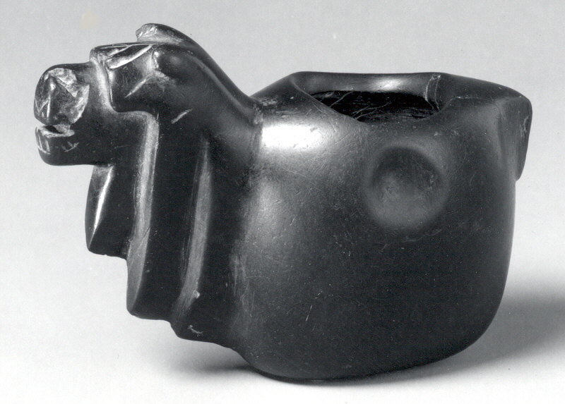
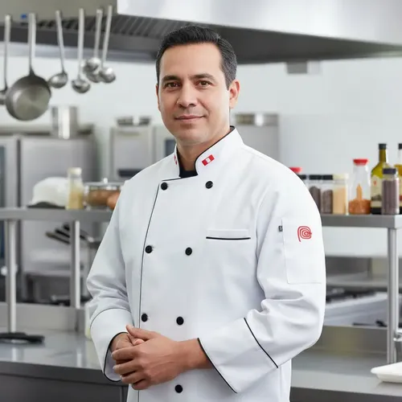

La Leyenda de Nuestro Nombre
En la tradición andina, la Konopa era un amuleto sagrado considerado un regalo de la Pachamama con el poder de multiplicar las cosechas y asegurar la abundancia de alimentos para toda la familia.

El Origen de los Fuegos (2010)
Nuestra historia comenzó en 2010, cuando tres cocineros tradicionales se conocieron en Lima. Don Luis, Don Alvaro y Don Carpio unieron sus conocimientos para encender un fogón que nunca más se apagó.

Don Luis (Sierra)
Maestro de las alturas y guardián absoluto de las papas nativas. Heredero de la ancestral Pachamanca cusqueña, Don Luis aprendió los secretos del fuego y la piedra directamente de sus abuelos.

Don Alvaro (Costa)
Experto en los sabores del mar y el arte del cebiche norteño. Con más de 15 años recorriendo las caletas del Pacífico, Alvaro perfeccionó la técnica del limón fresco y los cortes precisos que nos definen.
Don Carpio (Selva)
Curandero de los fogones y maestro indiscutible de los sabores amazónicos. Especialista en ahumados, cocona y técnicas ancestrales que capturan la esencia salvaje y misteriosa de nuestra selva.

Nuestra Filosofía
Comercio Justo
Insumos directos de comunidades nativas.
Sostenibilidad
Respeto a vedas y cultivos orgánicos.
Autenticidad
Recetas intactas con técnicas tradicionales.